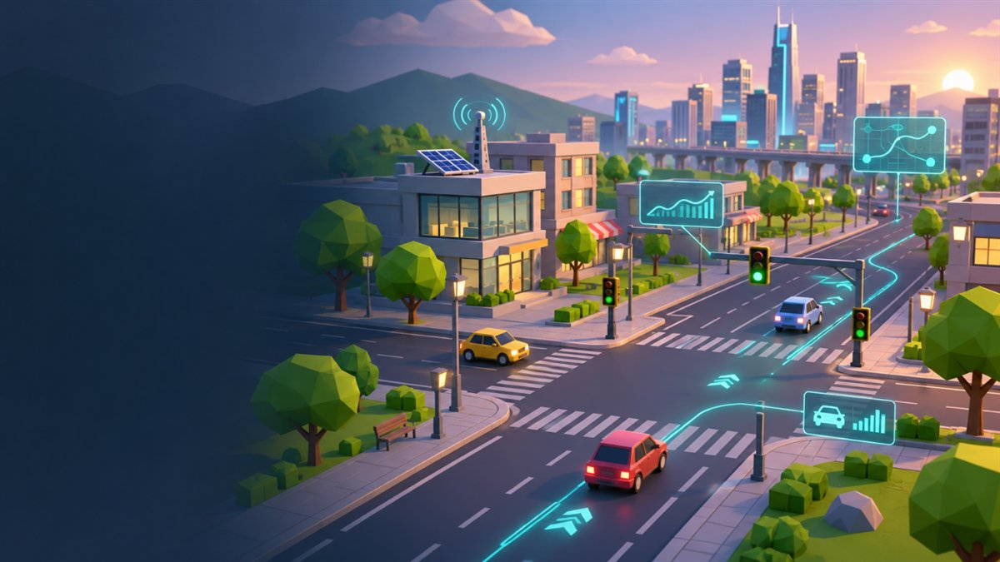

01
Build Your City
Place and rotate roads, buildings, parks, destinations, and traffic infrastructure on an approachable grid.
City builder + traffic simulation
Shape a living 3D city, compare traffic strategies, operate safer signals, and take the wheel of any active car.
Windows PC · v1.0.4 Smart City is currently available for Windows PC. You can explore the website on mobile.
The whole city is your system
Roads, vehicles, signals, collisions, and player choices all share one simulation. Change the network and watch the city respond.
01
Place and rotate roads, buildings, parks, destinations, and traffic infrastructure on an approachable grid.
02
Compare fixed Standard timing with adaptive SMART control that responds to demand while protecting conflicting flows.
03
Select a live traffic car with one click, press F, and drive the same vehicle through the city.
04
Vehicle contact can slow or block traffic temporarily, creating queues that clear as the incident is resolved.
05
Readable red, yellow, green, and all-red phases coordinate intersections and reveal traffic behavior.
06
Add the separate offline assistant to ask about your simulation. The base game works without AI.

Concept artworkOne city, two perspectives
See the city
Browse with touch, arrow buttons, or your keyboard. Concept artwork is clearly marked.
PC controls
These keyboard and mouse controls apply to the Windows PC game; the website remains fully explorable on mobile.
Traffic intelligence
Standard mode uses consistent signal timing. SMART mode observes demand and adjusts within safe limits. Both preserve signal phases, vehicle interaction, and Indian left-hand traffic.
STANDARD
SMART
Public release v1.0.4
v1.0.4 adds a modern interface, a visual building catalogue with model previews and Q/E controls, subtle animations, UI and building sounds, and saved volume controls.
Download the verified Windows installer from the official GitHub release. Optional local AI is separate; you can build, simulate, save, load, and drive without it.
WINDOWS 10 / 11 · 64-BIT
FAQ
No. The current public build targets 64-bit Windows PCs. You can browse this website on a phone, but the game is not an Android app.
No. Smart City is a downloadable Windows game, not a browser-playable game.
Download the official v1.0.4 downloader, open it on Windows, choose an installation folder, and let it retrieve and verify the published files.
Select the optional AI package in the downloader. It downloads about 1.15 GB of additional files and runs locally; the base game does not require it. Allow extra free space while installation completes. On a fresh Windows installation, install the Microsoft Visual C++ x64 runtime before starting the assistant.
Yes. City building, traffic modes, signals, saving, loading, and Free Drive work without the assistant.
Press Tab, click a car once, press F, then use WASD or arrows. Space brakes and E returns control to traffic AI.
Use F1 to save and F2 to load.